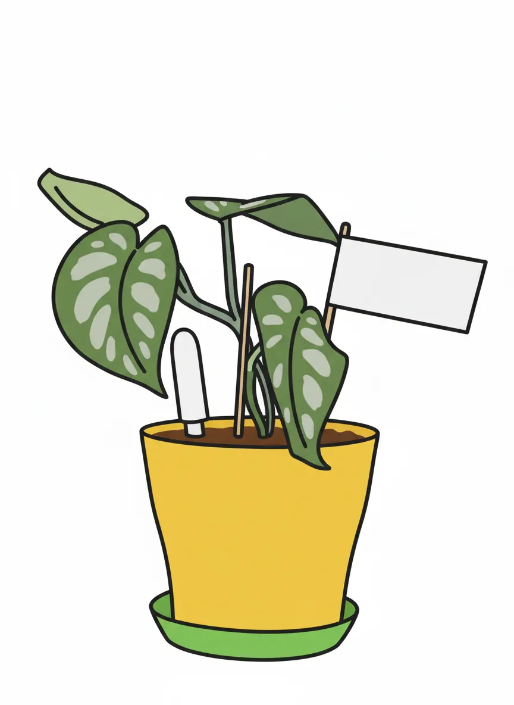
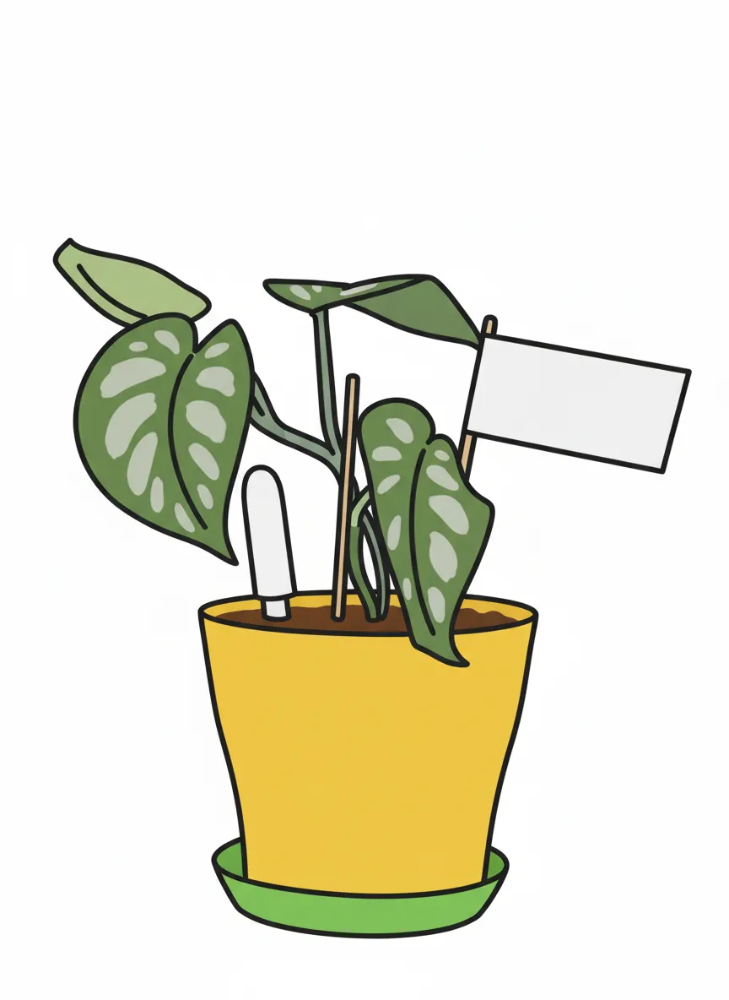

Mañana

 



Plant Mood
Word on the vine is, my agent pushed for the living room, specifically the TV adjacent spot, for max exposure. My leaves? They're not just green, darling, they're *moody*. And the name 'Mañana'? It’s less about procrastination and more about building suspense. You think I’m just a houseplant? Honey, I’m a lifestyle.
Plant Details
| Custom Name | Mañana |
| Scientific Name | Scindapsus pictus |
| Health | Very Good |
| Size | 20 |
| Environment | Livingroom TV |
| Has Grow Light | Unknown |
| Pot Type | potPlastic |
| Pot Soil | coconutCoirOrPeat |
| Pot Size | 15 |
| Has Drainage | Yes |
Care Schedule
| Action | Last Done | Next Due |
|---|---|---|
| Watering | ||
| Fertilizing | ||
| Repotting | ||
| Cleaning | - | - |
| Progress Update | ||
| Misting |